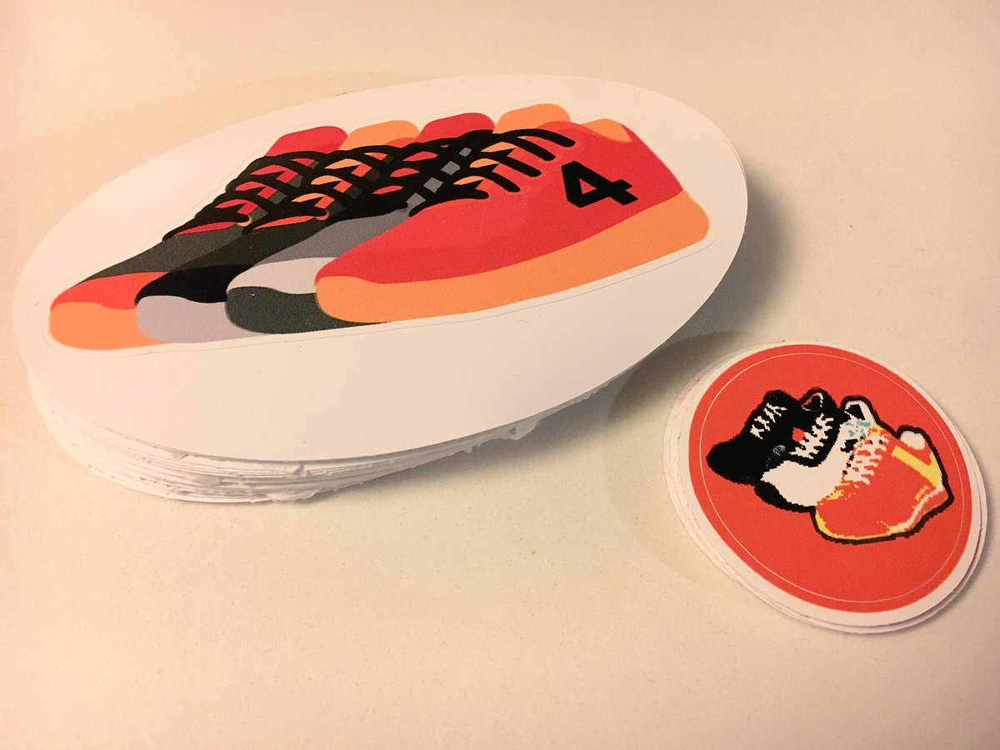

  	<div class="flex-wrap">
      
  	  <article class="tweet  " id="main">
  	    <p class="full_text">
  	      Anybody else as excited for @rubyconf as me? <div class="gallery"><ul><li><a href="../../tweets_media/928479485984247808-DOKfKpAVoAIkZxP.jpg"></a></li></ul></div>
  	    </p>
  	    <p class="created_at">
  	      11/8/2017, 8:28:54 PM
  	    </p>
  	    <p class="favorite_count">Favs: 13</p>
  	    <p class="retweet_count">Retweets: 1</p>
  	    <a class="permalink" href="../928479485984247808">link</a>
  	  </article>

  	</div>
  </div>
